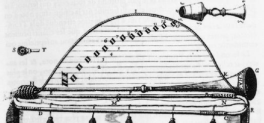

Classic 1820s Brass & Sterling Silver Trumpet
Asking price: $41,000
This rare trumpet was crafted in the 1820s and combines polished brass with sterling silver accents. The instrument is in immaculate condition and is offered complete with its original-style carrying case.
The trumpet’s clean finish, careful restoration, and historical significance make it an ideal acquisition for collectors and serious players seeking a museum-quality brass instrument.
Condition highlights:
- Original 1820s design with a polished brass bell
- Sterling silver mouthpiece collar and trim
- Immaculate playable condition
- Includes a fitted carrying case

Public domain image from Wikimedia Commons showing early trumpet components and mute.
Public domain imagery is used here to support the page’s visual presentation while avoiding SVG-only graphics.